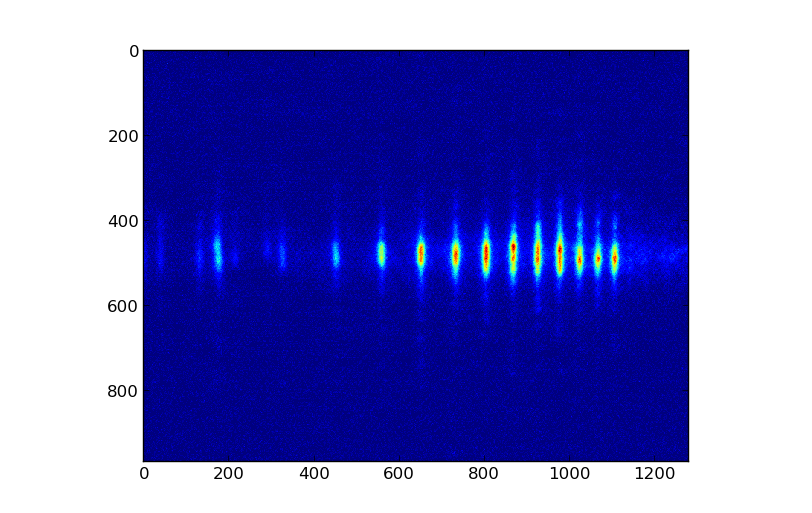

This tutorial illustrates a method for peak detection of quasi-periodic signals. We demonstrate the method using synthetic data, and present applications to astronomical data on sunspot activity, and lab data on EUV spectra from high-harmonic generation.
Reference: F Scholkmann, J Boss and M Wolf. An Efficient Algorithm for Automatic Peak Detection in Noisy Periodic and Quasi-Periodic Signals, Algorithms 5, 588-603 (2012)
The python code for executing is provided here. Dependencies:
Imagine you have a 1-D signal \(x_i\) sampled at locations \(t_i\) \((i=1,2,...,N)\). The goal is to find the values \(x_i\) where the signal is a local maximum. To do this we use a sliding window method. A window of size \(2k\) slides along the data vector. The value \(x_{i-1}\) is considered a local maximum if \(x_{i-1} > x_{i-k-1}\) and \(x_{i-1} > x_{i+k-1}\). This process is repeated for all window sizes \(k=1,2,...,N/2-1\).
We first create and plot a synthetic data set. Here’s how it looks:
In [1]: import pylab as py
In [2]: a = 0.5
In [3]: b = 0.5
In [4]: c = 0.5
In [5]: d = 0.5
In [6]: fs = 20. #80
In [7]: f1 = 10.
In [8]: f2 = 70.
In [9]: f3 = 5.
In [10]: t = py.linspace(0,5,1000) # (0,5,1000)
In [11]: x = a*py.sin(2.*py.pi*f1/fs*t) + b*py.sin(2.*py.pi*f2/fs*t) + c*py.sin(2.*py.pi*f3/fs*t) + d*(py.rand(t.size)-0.5)
In [12]: py.plot(t,x)
Out[12]: [<matplotlib.lines.Line2D at 0x2b05de9657d0>]
The sliding window test is implemented in a separate function:
In [13]: def calcLMS(vec):
....: L = py.ceil(vec.size/2) - 1
....: alpha = 1.
....: M = py.rand(L,vec.size) + alpha
....: for k in range(1,int(L)):
....: for i in range(int(k+2), int(vec.size-k+1)):
....: wk = 2*k
....: if (vec[i-1] > vec[i-k-1]) and (vec[i-1]>vec[i+k-1]):
....: M[k,i] = 0.
....: return M
....:
After applying the sliding window method we create the local maximum scalogram (LMS), \(M_{k,i}\). This shows where the maxima are for each window size. This is what the matrix looks like:
In [14]: linfit = py.polyfit(t, x, 1)
In [15]: yfit = py.polyval(linfit, t)
In [16]: ynew = x - yfit
In [17]: M = calcLMS(ynew)
In [18]: py.figure();
In [19]: py.imshow(M);
In [20]: py.xlabel('i',fontsize=18)
Out[20]: <matplotlib.text.Text at 0x2b05debe4610>
In [21]: py.ylabel('k',fontsize=18)
Out[21]: <matplotlib.text.Text at 0x2b05de91b310>
Next, we sum over the rows in the LMS (\(t\) axis) to determine the ideal size of the window.
The global minimum of \(\gamma_k\) (red circle) corresponds to the best window size for identifying the local maxima. The LMS is then “rescaled” to remove the data for uninteresting window sizes. The rescaled matrix is called \(M^{(r)}\). The final step in peak detection is to calculate the column-wise standard deviation, \(\sigma(t)\), of \(M^{(r)}\). The zeros in the standard deviation correspond to the locations of the peaks (see the paper for full details).
In [22]: gamma_k = M.sum(1)
In [23]: lambda_m = gamma_k.argmin()
In [24]: Mr = M[1:lambda_m, :]
In [25]: sigma = 1./(lambda_m-1) * py.sum( py.sqrt(( Mr - 1./lambda_m* (py.ones((lambda_m-1,1))* Mr.sum(0)) )**2), 0)
In the figure below we show both the data, and the standard deviation function. The value and location of the peaks are shown by the red circles.
In [26]: py.figure();
In [27]: py.plot(t,x,t,sigma);
In [28]: peakIdx = py.find(sigma == 0) - 1
In [29]: py.plot(t[peakIdx], x[peakIdx], 'or', markerfacecolor='None', markeredgewidth=2, markersize=8)
Out[29]: [<matplotlib.lines.Line2D at 0x2b05decf2ad0>]
As a real-life application we consider sunspot activity. Data on sunspot activity can be downloaded from the Royal Observatory of Belgium. We use the algorithm to find the location of the peak sunspot activity and identify the periodicity.
import pylab as py
import peak_detect
c,t,y = py.loadtxt('monthssn.dat', unpack=1)
peakIdx = peak_detect.getPeaks(t,y)
mu = py.mean(py.diff(t[peakIdx]))
s = py.std(py.diff(t[peakIdx]))
py.figure()
py.plot(t,y)
py.plot(t[peakIdx], y[peakIdx], 'or', markersize=8, markerfacecolor='None', markeredgecolor='r',markeredgewidth=2)
py.text(1750,270, 'Period: %.4g +/- %.4g years' % ( mu, s) )
(Source code, png, hires.png, pdf)
As a final application we consider locating the peaks in a high harmonic spectrum. This is could be useful for calibrating an energy scale in the spectrum, or locating absorption peaks.
We measured an EUV spectrum from high-harmonic generation in Ne. The spectrum consists of a comb of peaks spaced by twice the photon energy (\(\hbar \omega=1.54\) eV for our laser). The spectrum extends up to 72.7 eV (harmonic 47) where it is cutoff by the L3 edge of an aluminum filter.
The raw data looks like:
We next integrate over the rows in the image where the light appears. Then, we find the peaks:
s = im0[400:560,:].sum(0)
i = py.arange(s.size)
peakIdx = peak_detect.getPeaks(i,s)
py.plot(i,s)
py.plot(i[peakIdx], s[peakIdx], 'or', markerfacecolor='None', markeredgewidth=2, markersize=8)
{kind=link}
{kind=link}
{kind=link}
{kind=link}